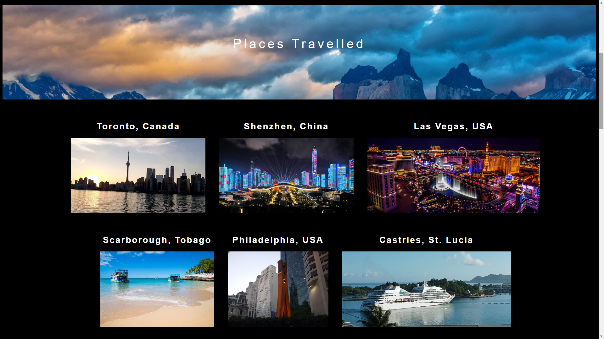

Simon Chung
Web Developer
Talented front-end web developer and former civil engineer with experience in managing construction projects from foundation to finish. Now, I create beautiful, responsive, interactive, and accessible websites specially tailored to my clients' needs.
Featured Projects
View selected projects below. More information can be found at simonchung.com.
Travel Adventures
A travel blog showcasing all the places that I've visited.
View projectWork Experience
Former civil engineer turned web-developer.
English Teaching Assistant
France Education Internationale
October 2021 - April 2022
Job Activities
- Created lesson plans for high school students in France
- Taught English to students using various teaching aids.
- Created and executed of learning activities
Project Engineer
Alpha Engineering and Construction Ltd.
July 2015 - July 2020
Job Activities
- Supervised daily activities on construction Projects.
- Ensured Quality Assurance and performed Quality Control checks of works
- Coordinated of sub-contractors of various disciplines (electricians, plumbers, tilers, painters, HVAC, etc.)
- Updated construction logs including daily diaries and variations to original scope of works.
Education
The University of the West Indies - St. Augustine
Bachelors Degree Civil Engineering, 2011-2015
Courses in various fields such as structures, geotechnics, hydrology, geomatics, and environmental.
The University of the West Indies - St. Augustine
Postgraduate Diploma Construction Management, 2020-2021
Courses in Material Technology, Construction Law, Finance, Management and Maintenance.